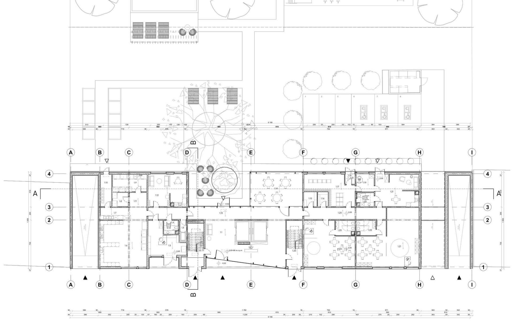
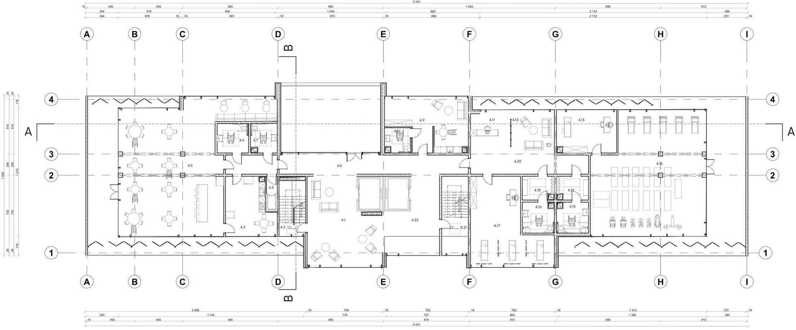
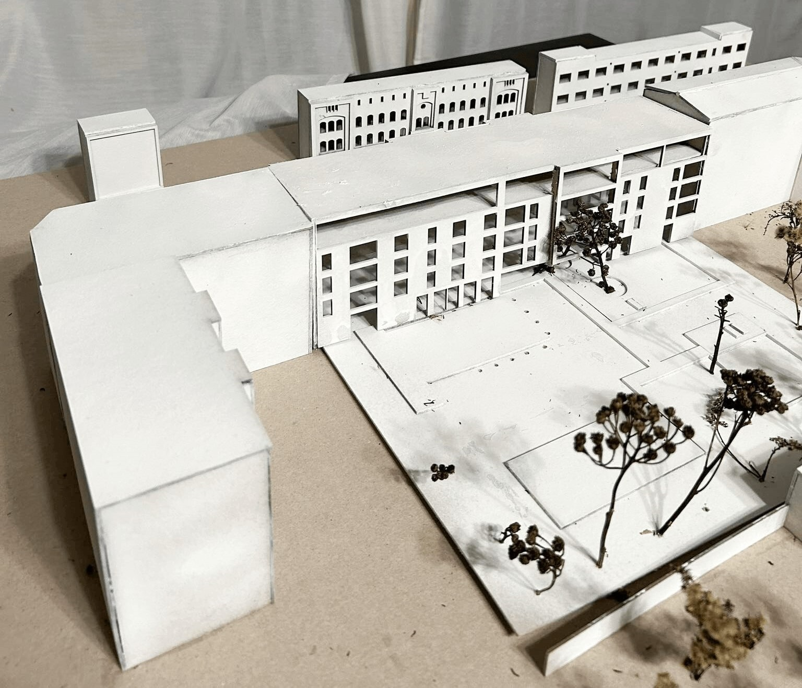
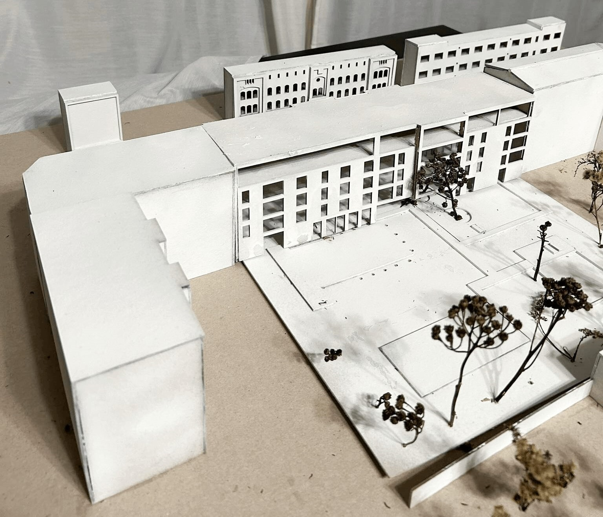

Kraszewskiego 28
The subject of the study is an architectural conception of a multi-family residential building located on plots 26 and 28 on Kraszewskiego street in Poznań. The study has been divided into three project stages. The first stage includes detailed analyses of the plot and the immediate area of the ul. Kraszewskiego. The conclusions drawn from the analyses have formed fundamental requirements in the subsequent project stage of the study. Based on said requirements, an object was created, with a structure well-suited to its surroundings. The functional-utility program has been designed in line with ergonomic principles, moreover the entire facility has been adapted for accessibilty needs of people with disabilties. The solutions described in the architectural and construction description have been formulated based on applicable conditions and legal standards.
Polish society is characterized by a high increase in the median age, which has increased from 25.8 to 38.2 over the course of seventy-two years. Many existing, but also newly built, architectural structures are not adapted to the needs of the future society. The life cycle of a building in Poland is approximately one hundred years, and the expected median age in 2050 is to be fifty years. It follows that most buildings, especially those with a residential function, will lose their functionality in the near future due to the changes that will take place in the user.
The project is an attempt to respond to the needs of the recipient not only at the moment, but also in the future. By ensuring the appropriate functionality of the building for users in different age groups.
Axonometric
Floor plans
Level -1

Level 0
Level +1 (repetitive floor)

Level +4
Detail floor

Visualizations


Model
 
